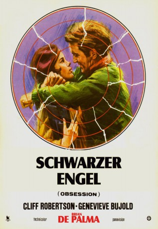

#10439 Schwarzer Engel
Alternativ: Obsession (Englischer Titel)
Auszeichnungen: für 1 Oscars nominiert
 
 IMDB-Wertung: 6.8 / 10
IMDB-Wertung: 6.8 / 10  Metascore: 0
Metascore: 0 
1959 werden Frau und Tochter von Immobilienmakler Michael Courtland entführt. Die Kidnapper entkommen, sterben bei einem Unfall. Michael sieht die Familie nie wieder. Sechzehn Jahre später reist er nach Florenz und begegnet in der Kirche, in der er getraut wurde, Restauratorin Sandra, die seiner Frau ähnlich sieht. Er verliebt sich in sie. Bei der Hochzeit in New York wiederholt sich die Geschichte. Sandra ist in Wahrheit seine Tochter, die sich mit Courtlands Partner verschworen hat, der auch damals für die Entführung verantwortlich war...
Jahr: 1976
Dauer: 98 Minuten
FSK: 16
Land: USA Studio: Columbia Pictures CorporationTonspuren:
Untertitel:
Auflösung: 1080p (1920x816) Größe: 7833 MB
Genre: Thriller, Drama, Mystery
Regisseur:  Brian De Palma
Brian De Palma
Drehbuch: Brian De Palma, Paul Schrader, Paul Schrader
Soundtrack: Bernard Herrmann
Darsteller:
 Cliff Robertson als Michael Courtland
Cliff Robertson als Michael Courtland Geneviève Bujold als Elizabeth Courtland / Sandra Portinari
Geneviève Bujold als Elizabeth Courtland / Sandra Portinari John Lithgow als Robert Lasalle
John Lithgow als Robert Lasalle J. Patrick McNamara als Third Kidnapper
J. Patrick McNamara als Third Kidnapper Don Hood als Ferguson
Don Hood als Ferguson- Regis Cordic als Newscaster
- Loraine Despres als Jane
- William Finley als
- Sylvia Kuumba Williams als Maid
- Wanda Blackman als Amy Courtland
- Stanley J. Reyes als Insp. Brie
- Nick Krieger als Farber
- Stocker Fontelieu als Dr. Ellman
- Andrea Esterhazy als D'Annunzio
- Thomas Carr als Paper Boy
- Tom Felleghy als Italian Businessman
- Nella Simoncini Barbieri als Mrs. Portinari
- John Creamer als Justice of the Peace
- Clyde Ventura als Ticket Agent
- Fain M. Cogrove als Secretary
- Robert Harper als Man In Airport (uncredited)
Datei: X:\1976\Schwarzer Engel (1976, FSK16, 1920x816).mkv seit 07.01.2019
Festplatte: HD 1971-1979
 Es gibt insgesamt 31 Filme in der Gruppe '1976'
Es gibt insgesamt 31 Filme in der Gruppe '1976'